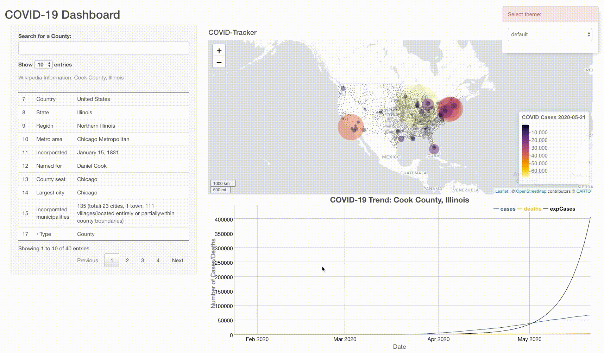
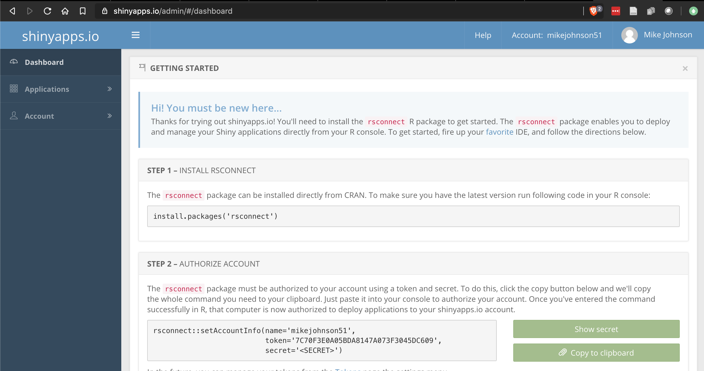
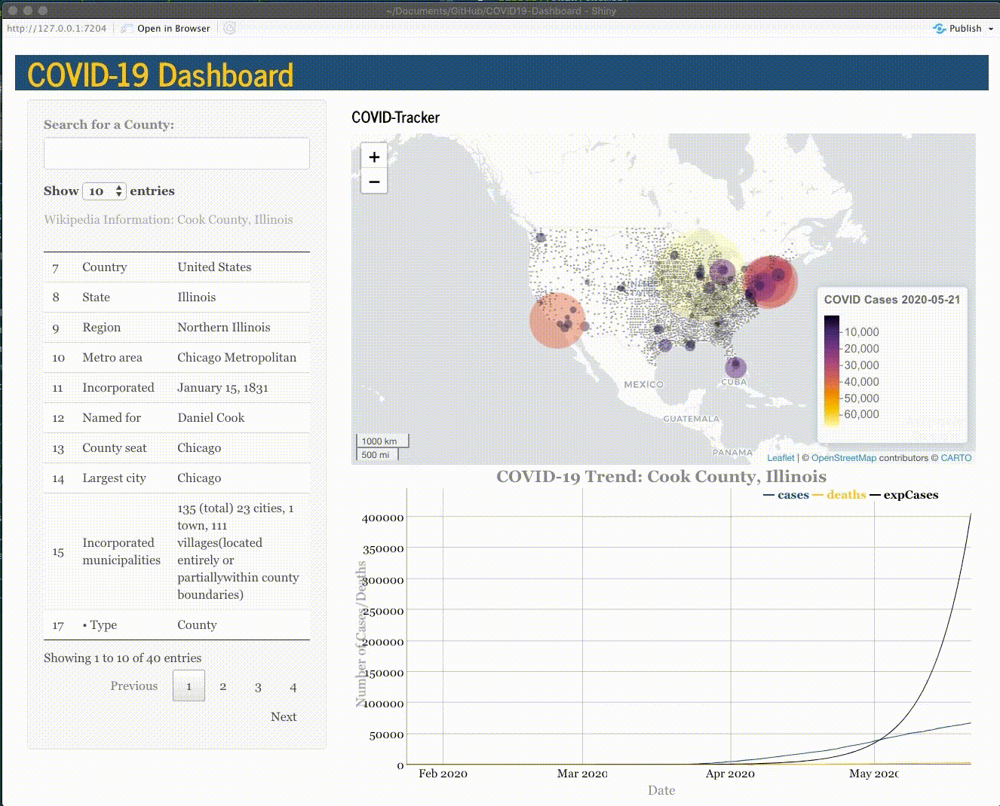

Our complete Shiny App was finished in the last section ( basic; advanced). In this section we will modify the theme of the Application and then publish to a free web server!
By default we are using the base Shiny theme. We want to personal the appearance of our application. HTML and JavaScript can be used to endlessly refine the Shiny UI however we are only going to utilize a pre-canned theme accessible in the shinythemes package.
ui <- fluidPage(
shinythemes::themeSelector(), # <--- ADD THIS ANYWHERE IN YOUR UI!
titlePanel('Mike Johnson: COVID-19 Tracker'),
# Sidebar layout output definitions ----
sidebarPanel(
autocomplete_input("auto",
"Search for a County:",
value = "",
max_options = 5,
structure(today$fips, names = today$name)),
# Output: Message ----
DTOutput("covidTable"),
),
# Main panel for displaying outputs ----
mainPanel(
textOutput("covidMessage", container = h4),
# Output: Map ----
leafletOutput('covidMap'),
# Output: Chart ----
dygraphOutput('covidGraph')
)
)
Once you identify the theme you like, substitute the live themeSelector with shinytheme(), and provide the name of the theme yo selected. I chose “journal”.
ui <- fluidPage(
shinythemes::themeSelector(), # <--- ADD THIS ANYWHERE IN YOUR UI!
theme = shinytheme("journal"),
# Sidebar layout output definitions ----
sidebarPanel(
autocomplete_input("auto",
"Search for a County:",
value = "",
max_options = 5,
structure(today$fips, names = today$name)),
# Output: Message ----
DTOutput("covidTable"),
),
# Main panel for displaying outputs ----
mainPanel(
textOutput("covidMessage", container = h4),
# Output: Map ----
leafletOutput('covidMap'),
# Output: Chart ----
dygraphOutput('covidGraph')
)
)Now that your code is all finished, you application has a unique theme, and you are happy with it, lets publish it as a website that you can share with others.
To do this we will using shinyapps.io. This service, offers a free tier that makes deploying your Shiny applications super simple. You don’t need to own a server or know how to configure a firewall meaning no hardware, installation, or annual contract is required.
Navigate to that website and sign-up.
Once you are signed up, you will be directed to a dashboard that looks like something like this:

From here you’ll need to follow the directions to launch your application and click the publish button in the upper right.
IF you have not yet connected you R session to shinyapps.io the you we need to add you account following the directions and using the information found on the home page of you shinyapp.io account.
Once your account is connected, make sure that the data folder, helper.R and app.R files are selected, and that you l

If/when you make changes to your application, follow this same process to simply republish the application. Here there are two warnings to be wary off.
Congratulations! You have built a fully felged, customized web application displaying up-to-date, live COVID information in map, table, and graph form!